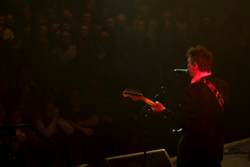
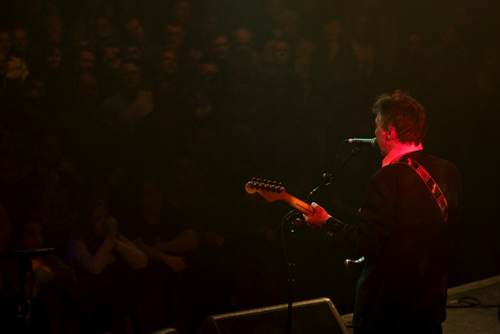

The Comsat Angels (Interview)
By Peter Mattinson

Mik Glaisher is particular appears to love every second. He pounds the drums as hard as he did 30 years ago, shouting with every strike while Kevin Bacon locks into the beat. Glaisher’s energy helps feed the others, a point Fellows agrees with afterwards.
I wondered if playing the gig in his hometown had any added significance: “Sheffield was never a particularly good place for us to play in the past – but this was slightly different in that we knew people were coming to see us and that it was likely to be a sympathetic audience.
On how he thought it had all gone, he answered: “On the whole, I would say that it went better than I thought it would and that the audience seemed to really enjoy it. It made a great change from the baffled expressions or indifference that we generally used to get round here.”
1. Waiting For A Miracle
Sheffield Academy, sometime around 9pm on Sunday April 26th. The BBC film critic Mark Kermode stands on stage to introduce the outfit he once described as “the band Joy Division could have been”.
There’s a sense of keen anticipation. People have travelled from Holland, New York and Australia to be here today. With a touching humility, the band’s singer and guitarist will later tell me that “I felt a bit bad about it because of the effort they'd had to make to get here and the expense of it for them.”
Finally, the words “One more time, give it up for the Comsat Angels.”

Photograph © Jacqui Bellamy, Pixelwitch Pictures
2. It’s History
The Comsat Angels were born sometime in the late 70s in Sheffield. Unlike many of their contemporaries, punk wasn’t an instant call-to-arms for future frontman/guitarist Stephen Fellows, who found it “boorish”, though the subsequent sounds of Public Image Ltd. left more of an impression, alongside Television and Patti Smith.
Alongside keys player Andy Peake, bassist Kevin Bacon and drummer Mik Glaisher, the future Angels moved through various monikers before supporting Pere Ubu at a Newcastle gig as Radio Earth. It proved to be a crucial moment. Fellows would call the gig a “nightmare”, as Ubu’s intense post-punk sounds forced the fledging foursome into a radical rethink.
A new start needed a new name. A short story by the late, great J.G. Ballard provided the name and a period of hard rehearsing saw a new sound forming. Glaisher’s dad helped out by funding the recording of an EP (Red Planet, naturally pressed on red vinyl), a copy of which landed on the desk of John Peel.
With the support of Peel, major label Polydor snapped the band to a three-album deal, though the band would later say that they may well have carried on releasing their own material if the distributor of the debut EP hadn’t vanished with the cash.
At the time, Polydor were home to the Jam, one of the biggest bands in the country, and Siouxsie and the Banshees. Teamed with in-house producer Pete Wilson (who would go on to work with the Jam), the well-oiled machine that the band had become were able to finish recording in ten days.
On its 1980 release, Waiting For A Miracle, its cover showing a night view of Sheffield from a dual carriageway, was thrown into an arena that also featured debut albums by Echo and the Bunnymen, the Psychedelic Furs and U2. It’s held up superbly, its sparse arrangements not dating it one bit. Independence Day provided an early anthem and On The Beach reflected the nuclear paranoia of the time.
Though not making the UK charts, perhaps not helped by the media believing a band signed to a major label had a lack of credibility – this was the era were indie labels such as Factory and Rough Trade were at their hippest – Polydor stuck faith and the next year the band entered the studio, again with Pete Wilson.
March 1981 saw the release of the sublime Eye Of The Lens, one of the great singles of the era, easily the equal of Shot By Both Sides or Love Will Tear Us Apart. Yet it was only a small sample of what was to follow.
Sleep No More is a staggering album, in the truest sense of the world. No singles were extracted from it, reflecting its ‘wholeness’, while not being a concept album per se. At the time, the band toured with U2 and Bono described their music as having a ‘terrible beauty’. Loathed as I am to agree with him, his description is spot on. Sleep No More equals the intensity and feel of Closer; it’s an essential piece of music from start to finish.
It also received great press, and sales were initially promising with the album hitting #51. Unfortunately, Polydor took two weeks to get copies back into the public, effectively killing its progress.
Perhaps exhausted by the anger and energy needed to write and record the second album, the Comsats changed tact. Stand alone singles (Do The) Empty House and It’s History showed a more ‘pop’ feel. This continued with the opening track of album #3, Fiction. After The Rain was a chiming affair initially inspired by Fellow’s watching the TV adaptation of Dennis Potter’s ‘Pennies From Heaven’.
Written on the back of heavy touring, Fiction also featured a re-recorded version of Ju Ju Money (an early b-side) and a track – Don’t Look Now – written through studio improvisation, a technique uncommon for the band. Elsewhere, What Else?! and Birdman would have been destined for radio in another dimension, but it was not to happen. Fiction made #94 and went no further.
I suggested to Fellows that the band’s image as being a ‘guitar’ band in a time where their fellow Sheffield bands were better known for their synth sounds may have played against them. Perhaps they would have enjoyed more success if they’d been from Manchester? He dismisses this idea.
“I played guitar because I liked Jimi Hendrix and Hank Marvin among many others and I enjoyed it,” he states. “I wasn't suddenly going to start playing a synth when they became fashionable eventually, which they weren't when the Cabaret Voltaire and the Human League started - anyway Richard of the Cabs usually played guitar.
“I don't think living in Sheffield made any difference to the songs really – I usually write on guitar, I wouldn't do it any differently if I was in a different city. We weren't a band that was conceived to a formula or recipe – that kind of thinking would have been a bit too post-modern for the times. We were trying to do tunes in a way that sounded good to us, given the instruments we played. Thinking about it a bit more we were probably a bass and drums band with guitar, keys and vocals over the top.”
On the last point, Fellows is spot-on. The rhythm section of Bacon and Glaisher were amongst the best of their (or any) time. Equally adapt of slow grooves or rocking out, Glaisher especially developed a hard-hitting style that would influence the likes of John Lever from the Chameleons.
Photograph © Jacqui Bellamy, Pixelwitch Pictures
3. Ju Ju Money
With Fiction selling less then Sleep No More, Polydor’s offer of an advance for a future album didn’t meet the band’s wishes and a move to Jive Records, home to A Flock of Seagulls, then enjoying considerable US success, followed. Also at this time, the Comsats would have seen their Sheffield neighbours ABC, the Human League and Heaven 17 hitting their creative and commercial peaks.
However, such luck would escape the Comsat Angels (re-named CS Angels in the US after some nasty legal letters from the Communication Satellite Corporation people). Their debut on Jive, Will You Stay Tonight?, was a wonderful pop song with a killer chorus and became the band’s singles chart debut at #81. A re-recording of Independence Day became their only single to crack the top 75, making #71.
When the parent album Land made only #92 and follow-up 7 Day Weekend failed to make even that, it seemed that the Comsat Angels had hit a dead end. Yet Fellows remains philosophical on their time on Jive.
“We went along with the experiment - to try and be a pop group – fairly wholeheartedly, but I guess we weren't really comfortable with it,” he says. “You start wondering who you are and what you're doing after a while, apart from feeling you look like a twat. I suppose it would have been at least tolerable if we'd made some money – which we didn't. Jive were playing the game as it was being played at the time.”
As the owner of a scratchy vinyl copy of 7 Day Weekend, the Comsats were certainly adept at writing fine pop songs – and You Move Me was a stirring rock anthem easily the equal of anything U2 were doing at the time – it remains a mystery as to why they failed to garner any press attention. It was also around that the band received their biggest exposure when the single I’m Falling was used in the Val Kilmer film ‘Real Genius’.
At yet another junction, a helping hand came from a (clichéd as it may sound) unlikely source. Robert Palmer, then a huge global icon, cited the Comsat Angels as one of his favourite bands on television and aided them in getting signed to Island Records.
Chasing Shadows followed in 1986, and featured Palmer on backing vocals on one track yet a new label and the approval of a superstar was still not enough to reverse fortunes. It’s yet to be re-issued, Fellows explaining that there have been problems with Universal regarding licensing it to Renascent Records, the label that has faithfully put out much of the Comsat Angels back-catalogue back into the public arena.
Three years later came the bizarre episode of the band renaming themselves as Dream Command to release Fire On The Moon, although only in limited numbers in the US and Holland, the latter being a country they’d enjoyed some popularity.
By 1992, they’d thankfully returned as the Comsat Angels on RPM Records with My Mind’s Eye, which Fellows has named as his favourite album by the group. Though it managed to gather only a few reviews, they generally praised the album. The singles Driving and Field of Tall Flowers were among their best, but yet another blow came when Kevin Bacon decided to leave the group to concentrate on his production work, a career path in which he has worked with the Longpigs, Pretenders and Sugababes (helming their chart topping Round Round with long-time colleague Jonathan Quarmby).
With new bassist Terry Todd and additional guitarist Simon Anderson on board, the last hurrah of the, perhaps ironically titled, The Glamour album arrived in 1995. With a dual guitar line-up, it rocked harder then anything else they’d done, but time restraints gave the original album something of an unfinished quality. The double CD re-released gives, according to Fellows, a much more improved set.
After that, they quietly split up. Fellows kept himself busy managing Gomez, also playing a little guitar on a couple of their early songs, Andy Peake settled into family life and Mik Glaisher settled behind the drum kit of Sheffield blues-rock trio Chicken Legs Weaver (recently championed by Mark Lamarr). That appeared to be that.
Photograph © Jacqui Bellamy, Pixelwitch Pictures
4. Our Secret
Yet we know things aren’t always that simple. Sometimes we do get a happy ending of sorts. So, back in the present, the Comsat Angels are here in their original form. Questioned on the reasons, Fellows told No Ripcord that: “The gig came about because Nigel and Jo who organise the Sensoria Fest asked us if we'd fancy doing a show.
“I was kind of surprised, but it became more plausible when none of us raised any objections. I think if you're in a band you never really leave it, even if it splits – and we were together for 15 years or so. I think this might explain why so many bands re-unite these days. There's also a sense of 'unfinished business' to some extent, I suppose, and we like playing together. I think the most thought has gone into 'logistics' – i.e. availabilities, planning and sorting stuff out.”
It also helped that the four had begun talking to each other when Renascent approached them during the re-issue project back in 2004, as Fellows explains: “We basically had to start talking to each other again or there wouldn't have been agreement for them to come out.”
I wonder how it feels that record store racks finally have Comsat Angels albums back in them, after what I would imagine is a long time? “Well the intention was to get the stuff back on sale, so seeing them in the racks was 'mission accomplished'.
“It's always a buzz seeing your stuff there with everybody else’s in a shop - makes it seem almost 'proper'. I do wonder if people get them because they've read about them or something – I guess I just hope that anyone who buys them isn't disappointed.”
Stephen Fellows is a very humble individual. During his pre-gig introduction, Mark Kermode tells us that the singer and the rest of the band don’t take praise too well, before saying they’re the best band in the world. It seems that the long-deserved dues are finally coming in.
“It's kind of gob-smacking really – I'm sure folk must think we're paying him or something. We're grateful for his dogged support, but I really don't know what we deserve or don't deserve. I probably have the least objectivity of anybody with regard to our music so you're asking the wrong person. I have noticed the band’s name cropping up quite a bit though recently in various places. Your opinion on this is probably more valid than mine.”
The gig itself has a feel of a celebration. Everyone in the venue knows the songs inside-out and there’s a keen sense that something special is about to happen. Beforehand, the band had agreed to stick to songs from their first three albums.
Fellows explained this prior to the gig as “a way of getting agreement amongst us to do the show, and, obviously, Kev wasn't on The Glamour. Possibly we lost our sense of ourselves a bit after Fiction. Anyway, it saves having a lot of arguments about what to do and the stuff from that time does seem to hang together more coherently. I suppose I'm a bit worried that some people might be expecting an evening of Sheffield pop nostalgia – some of our stuff is a bit intense, I understand.”
On the subject of going back, he added: “It's not been difficult to do those songs again – in fact we're probably doing them better than before – hope so anyway. My head's in a slightly different place regarding writing these days and that was the strangest part for me. We were talking about this a bit and we agreed that if we'd been recording those tunes now for the first time a few things would be different – structures, tempos here and there – but not that much.”
When the four do make their way to the stage, they’re met by a loud roar of approval which seems to take them by surprise a bit. Starting with Sleep No More, each song is met with approval and encouragement, many with the crowd singing every word.
Mik Glaisher is particular appears to love every second. He pounds the drums as hard as he did 30 years ago, shouting with every strike while Kevin Bacon locks into the beat. Glaisher’s energy helps feed the others, a point Fellows agrees with afterwards.
“I think that's an accurate description,” he says. “Mik and Kev are a phenomenal rhythm section. Not only are they as tight as a gnat’s whatsit, but they have some great and very original ideas, and a very distinctive sound which is essential to our stuff. They are just a joy to play with – I never really realised how lucky I was before. They make me better than I am, which is the sign of a good musician.”
Fellows also praised the man on keys: “Andy is a law unto himself – an incredible player, there seems to be no end to what he can do – I could listen to him play improvised solo piano all night – and have done on a few occasions. I'm easily the worst player of all of us.”
Through the set, I’m struck for the first time on how many of the Comsat’s songs are damn catchy. Perhaps I’d always thought of them as a band to listen to on my own, like Joy Division, but listening to them with a large group of devout followers suddenly reveals just what a way with a hook they had. The one-two of Independence Day and Eye of the Lens is stunning.
There are occasions, that being two, where the crowd’s own vocals seem to drown out Fellow’s own. I asked if he picked up on this: “I certainly did – the one I noticed particularly was at the apex of Baby – that really surprised me and almost made me lose my place.”
When they leave the stage, we beg them to return, chanting their names until they re-emerge. Fellows states that it “feels like a dream”. Afterwards, he observed that: “Right up until the show, I couldn't believe that we were actually going to be doing it and now that it's happened I can't believe we've done it and that it went so well.”
There’s sadness when it’s over. No-one has wanted it to end. Yet, at the same time, we’re glad we were here to see it, both those who saw them way back when, and those who were too young and cursed missing out. I asked Stephen how he’d felt it had gone for him personally.
“I wasn't really concentrating on how I was feeling. I suppose you're in something like 'fight or flight' mode onstage – time seems to pass very quickly and at the same time in a kind of slow motion when you're in that sort of heightened state caused by adrenalin or something. It's hard to describe – if you've performed onstage yourself I'm sure you'll know what I mean.
“I suppose I see doing a gig as a series of tasks that it's my job to execute as well as possible whilst in the middle of a raging maelstrom. I find it quite hard because I've got to remember all the words, sing in tune, and play the guitar at the same time, and, oh yes, talk to the audience and not look like a dick. I'm not a natural as you probably can tell.
Back to the subject of fans from far-flung parts of the globe descending on Sheffield, Fellows believes it was a factor that helped him in his own performance: “It was one of the things that made me determined to do it well. I know that it's highly unlikely that we'll ever get to the States again, or to Australia. There were also folks from Italy, Germany and some dear friends from the Netherlands among several other places, and those are just the ones I know about.”
I wondered if playing the gig in his hometown had any added significance: “Sheffield was never a particularly good place for us to play in the past – but this was slightly different in that we knew people were coming to see us and that it was likely to be a sympathetic audience.
“It was great to see loads of friends and people I knew but hadn't seen for ages. I'd not seen Richard Hawley since me and my wife spent an afternoon in the Washington with him just before Coles Corner came out, but he came backstage after the show and said that he'd really enjoyed it – which surprised me a bit – as I didn't think it was his kind of thing. Later on, he showed me the spot just outside the Academy where, aged 10, he'd had to jump down a terrifying drop of around 15 feet to escape being stabbed.”
On how he thought it had all gone, he answered: “On the whole, I would say that it went better than I thought it would and that the audience seemed to really enjoy it. It made a great change from the baffled expressions or indifference that we generally used to get round here.”
Photograph © Jacqui Bellamy, Pixelwitch Pictures
5. What Else?!
Leaving the gig, I was handed a flyer for ‘The Last Weekend’, a series of three dates the Comsat Angels will play in Glasgow, Manchester and London from October 22-24.
Would the band follow a similar set list to the Sheffield show? “I'd like to vary it a bit perhaps, but I thought that the set in Sheffield worked quite well. We don't know for sure if Kev can do those dates, as he's supposed to be in the studio producing an album in Jamaica at that time. But as he said, these things often slip. We're very fortunate that Terry Todd, who was in the last line-up of the band, has said he'll do it if Kev can't. I think I'm looking forward to the gigs.”
I had to ask about the name for this tour. Is it an accurate description? “It could be. I don't know. I asked the promoter why he'd put that and he said he wanted to give the gigs a theme.” Fellows also added that Andy Peake has his own family and work commitments, so “they may well be our final shows.”
If they are or not, and I don’t do this often, I urge everyone who reads this article to go to these shows. The Comsat Angels are a hidden treasure to few; it’s time they became loved by many.
26 May, 2009 - 10:27 — Peter Mattinson